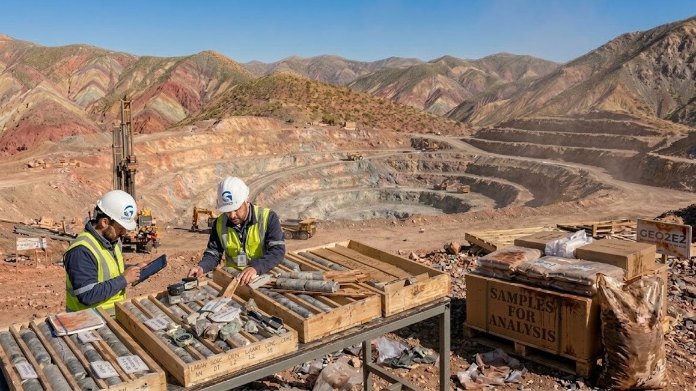

Mining and quarries
Exploration · Resources · Value enhancement

GEO2E2 offers comprehensive expertise in mining project development. We work in mineral exploration, applying advanced methods of geological, geomatic, geochemical and geophysical analysis to identify and characterise the potential of ore deposits.
We support our partners in enhancing and sustainably managing deposits by combining a range of approaches and tools designed to maximise profitability while minimising environmental impact. Our commitment is based on innovation, scientific rigour and respect for the principles of sustainable development.
The tasks we take on
- Geological and mining exploration
- Geological mapping and cross-sections
- Geochemistry and geophysics
- Drilling supervision
- Sampling
- Resource and reserve estimation
- Mining work plans
- Mining files and titles
- Impact studies
- Geotechnical risk assessment